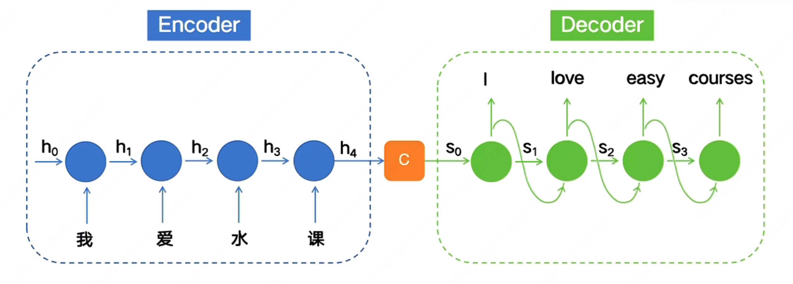
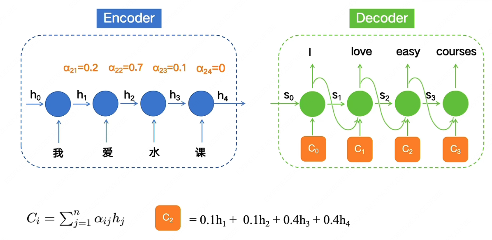
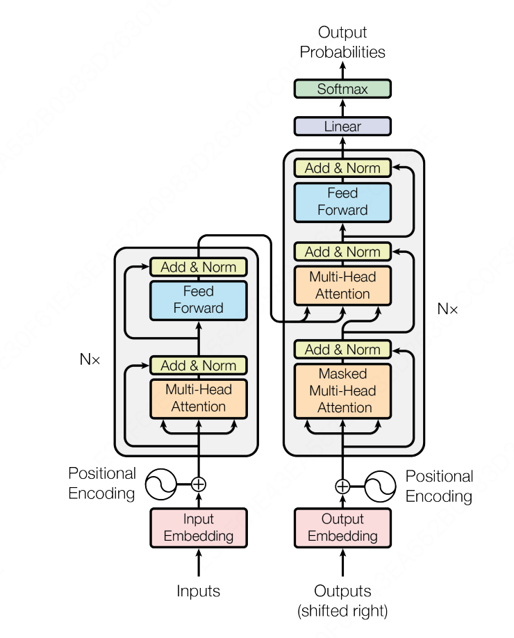
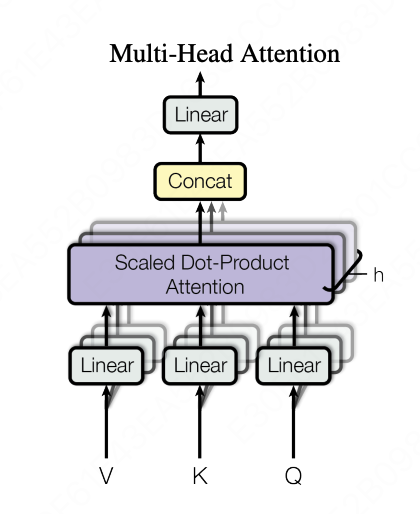
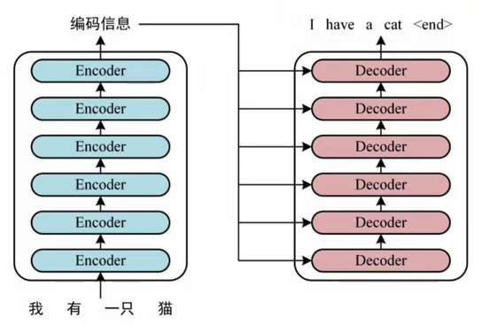
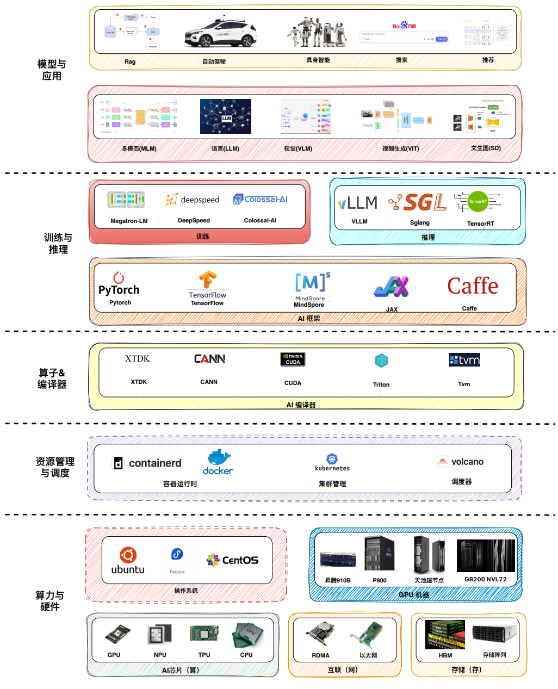
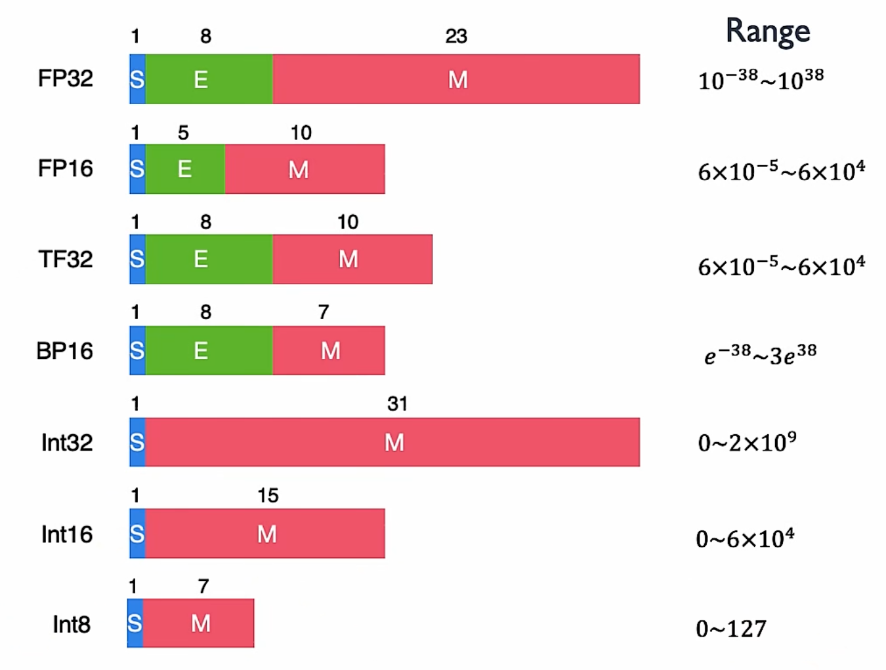
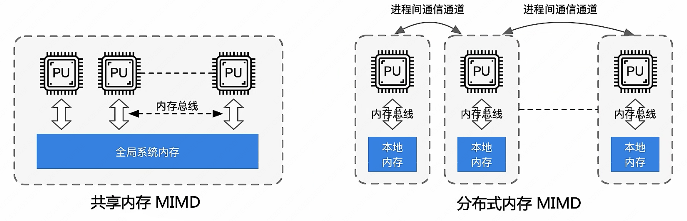
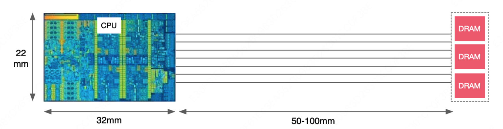
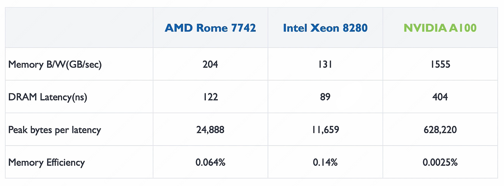

现代人工智能
学习资源：
LLM 视频：
MLsys 视频:
Deep Learning
FNN
Feedforward Neural Network，前馈神经网络，也是最简单的神经网络
模型结构如下图所示：

如果我们想要用它作为一个序列转导模型(Sequence Transduction Model)来解决序列转导问题，它是不合适的，原因有以下几点：
-
从输入层来看，它的输入是固定的，每输入一个token，就会直接产生一个结果，显然是不合适的，只能产生所谓的等长结果
-
完全丢弃了句子中词语的顺序信息
RNN
Recurrent Nerual Network, 循环神经网络的出现就是为了解决 FNN 中出现的序列转导问题
首先我们来尝试改造之前的 FNN，来将输入句子中词语的信息也编码进模型里，那么很容易想到，我们可以将上一个时间步 $t - 1$ 计算得到的中间输出 $h_{t - 1}$ 也传递给下一个时间步 $t$。那么再下一个时间步 $t$ 计算时，就可以像人一样分析前面出现的词语了
我们来举例说明，如果我们的输入是"我爱水课"，那么计算过程如下：

也就是：
$h_t = f(W x_t + U h_{t - 1})$
$y_t = g(Vh_t)$
其中：
- $x_t$: $t$ 时间步的输入
- $h_t$: $t$ 时间步的隐藏状态
- $y_t$: $t$ 时间步的输出
- $W,U,V$: 权重矩阵
- $h_t$中的 $f$: 激活函数,如 ReLU, Sigmod, 用于引入非线性
- $y_t$中的 $g$: 视任务而定，用来将输出转换为我们想要的结果
很好，但是现在还有一个问题还没解决，输入和输出不等长的时候怎么办？
那么我们显然不能在每个时间步 $t$ 都固定进行一次输出，而应该将输入和输出分开来，也就是在所有输入都计算完成后，再统一进行输出。
这就是大名鼎鼎的 Encoder 和 Decoder 架构：

这里的 $C$ 就是所谓的“上下文向量”
现在我们来看 RNN 似乎已经够完美了，但是依旧还有两个问题困扰着人们：
- 我们来看隐藏状态 $h_1$，它在产生 $C$ 的时候已经被计算了好多次了，随着序列长度的增加，它所携带的信息素会被稀释的越来越少，这也就是我们经常说的模型在处理长序列时出现的“遗忘”问题。
- 对于每一个输出来说，不同时间步的隐藏状态 $h_i$ 对它来说意义显然不一样，比如“我爱水课”中的“水”，很明显对于“课”这个词应该非常关注，而不是现在这样笼统的进行同等对待的输入，而是应该类似于 $s_2=0.1h_1+0.1h_2+0.2h_3+0.6h_4$
- Encoder 和 Decoder 中都是串行化计算，无法并行，限制了模型进一步发展
对于上述问题，人们提出了 Attention Mechanism(注意力机制)：

比如对于“我爱水课”中的”水“，它明显对"课"这个字有更高的关注度，因此它的输入中对 $h_4$ 的关注度明显大于 $h_1$，$h_2$，因此我们可以让模型在训练中学习到 $C_2 = 0.1h_1+0.1h_2+0.3h_3+0.5h_4$。
这样对于距离它很远的词，它也可以通过给它一个很大的权重，来解决遗忘问题。
因此上面的问题1 和问题 2 的问题都解决了，现在只剩下一个问题了，那就是如何并行计算？
虽然也有很多人在使用 CNN 来改造 Encoder 来达到并行计算的目的，但是又重新带来了远距离遗忘问题，要想彻底解决这个问题，就得等到 2017 年 Transformer 的横空出世了
Transformer
谷歌在 2017 年发表了一篇划时代的论文： Attention Is All You Need(论文原文以及翻译在这)
论文中提到了一种全新的模型：Transformer，它完全抛弃了 RNN 或者 CNN 的序列建模方式，完全基础自注意力机制，模型结构如下图所示：

直接看上面的图，肯定会两眼一黑，这画的都是个啥啊？？？
我们来慢慢分析，你就能理解为什么会这样设计了，以及怎么想到这么设计的？
首先我们来看看 RNN 还会有串行化的问题呢？就在于我们在解决 FNN 中句子中词语的位置信息问题时，采用了一种暴力方式，让当前时间步 $t$ 的输出依赖于上一个时间步 $t - 1$ 的隐藏状态 $h_{t - 1}$，而不是只依赖于当前输入 $x_t$。这种方法确实在一定意义上解决了位置信息的问题，但是后来又带来了远距离遗忘问题。
这时候我们会发现，能不能把这个输入的位置信息也硬编码进输入里面呢？这样我们就可以不用依赖上一个时间步的隐藏状态了，而同时计算每一个输入的输出了。恭喜你发明了 PE(Positional Encoding, 位置编码):
$$ \begin{align*} PE_{(pos,2i)} &= \sin\left(\frac{pos}{10000^{\frac{2i}{d_{model}}}}\right) \\ PE_{(pos,2i+1)} &= \cos\left(\frac{pos}{10000^{\frac{2i}{d_{model}}}}\right) \end{align*} $$这种位置编码的好处涉及到傅立叶变换等相关知识，这里先不赘述了。以及中国的苏剑林老师提出了 RoPE（旋转位置编码），优化了 Transformer 论文中原版的位置编码，被 ChatGPT 等现在主流大模型直接采用。
有了上面的位置编码，我们就可以完全抛开之前 RNN 的循环结构了，转为设计一种更加优雅的自注意力机制，我们叫他缩放点积注意力(Scaled Dot-Product Attention)。
我们首先假设我们的输入是 $n$ 个 token 组成的序列 $x_1, x_2, ..., x_n$，每个 token 都会被 embedding 成一个 $d_{model}$ 维的向量，再和位置编码 PE 进行想加，得到最后的输入矩阵是 $X \in \mathbb{R}^{n \times d_{model}}$。模型在训练的时候，实际上就是在训练模型中的权重矩阵 $W_Q, W_K, W_V \in \mathbb{R}^{d_{model} \times d_k}$，这些权重矩阵会将我们的输入 $X$ 映射到 $d_k$ 维的空间中。
输入矩阵 $X \in \mathbb{R}^{n \times d_{model}}$，分别和 $W_Q, W_K, W_V \in \mathbb{R}^{d_{model} \times d_k}$ 相乘得到矩阵 $Q, K, V \in \mathbb{R}^{n \times d_k}$。
其中:
- $Q$：由查询向量 $\overrightarrow {Q_i}$ 组成的查询矩阵。通过使用一个查询投影矩阵 $W_Q$ 乘以嵌入向量 $\overrightarrow {E_i}$ 得到查询向量 $\overrightarrow {Q_i}$。
- $K$：由键向量 $\overrightarrow {K_i}$ 组成的键矩阵。通过使用一个键投影矩阵 $W_K$ 乘以嵌入向量 $\overrightarrow {E_i}$ 得到键向量 $\overrightarrow {K_i}$。
- $V$：由值向量 $\overrightarrow {V_i}$ 组成的值矩阵。通过使用一个值投影矩阵 $W_V$ 乘以嵌入向量 $\overrightarrow {E_i}$ 得到值向量 $\overrightarrow {V_i}$。
要想理解这里的矩阵 $Q, K, V$，我们先来举个例子来形象化的理解它们分别的作用：
假设有一个男生叫小帅，他想找对象，于是打开了交友软件。软件上有许多个女生 $b_1, b_2, b_3, \dots$ 也在寻找对象。小帅希望找出哪些女生最符合自己的要求，这样他就可以把更多注意力放在最合适的人身上。那么他可以这样做：

- 小帅首先需要发布自己的择偶标准，就是 Query($Q$);
- 每个人都需要在主页上标明自己符合哪些条件（包括小帅自己），这就是 Key($K$);
- 每个人还需要写清楚自己所有的的实际信息，这就是 Value($V$);
- 小帅用自己的要求 $Q$ 去和每个女生的 $K$ 做匹配，计算匹配程度（点积，即 $QK^T$），然后乘以缩放因子$\frac{1}{\sqrt{d_k}}$（这里是为了将点积后的结果变得更方便后续计算，实践中我们发现点积缩放后注意力速度更快、更节省空间），再用 Softmax 将匹配度归一化，得到注意力权重，这样就知道应该重点关注哪些女生；
- 注意力权重矩阵 $A' = \text{Softmax}(QK^T)$ 只是表示匹配程度，例如 $0.5, 0.2, 0.1 \dots$。但是仅有权重还不够，最终还需要获取具体信息，所以要用注意力权重去加权 Value ($V$)，得到最终的输出结果。
所以最终的缩放点积注意力机制计算可表示为：
$$ \text{Attention}(Q, K, V) = \text{softmax}\left(\frac{QK^T}{\sqrt{d_k}}\right)V $$现在我们再来看看上面 Transformer 架构图上的 Encoder 部分：

这里的多头注意力模块是不是和我们上面设计的缩放点积注意力一样，所以图中部分有三个输入，分别对应去计算 $Q, K, V$。
论文中的编码器由 $N = 6$ 个相同的层堆栈组成，每一层有两个子层。第一个是多头自注意力机制，第二个是一个简单、位置感知的全连接前馈网络。在每个子层周围使用残差连接，然后进行层归一化。
Q. 那么多头注意力机制的“多头”到底体现在哪里呢？
A. 我们上面知道我们的输入矩阵 $X \in \mathbb{R}^{n \times d_{model}}$ ，而 $Q, K, V \in \mathbb{R}^{n \times d_k}$，最后的缩放点积注意力机制计算得到的结果 $\text{Attention}(Q, K, V) \in \mathbb{R}^{n \times d_k}$。但是为了方便计算，统一中间每一层的结果维度，我们会让每一层计算得到的结果和输入的维度一致，因此我们还需要将单个缩放点积注意力机制得到的结果进行一些处理，来得到和输入矩阵 $X$ 维度相同的输出结果。
最简单的方式就是使用和 $d_{model}$ 维度相同的矩阵 $W_Q, W_K, W_V$,即 $d_k = d_{model}$,也就是 $W_Q, W_K, W_V \in \mathbb{R}^{d_{model} \times d_{model}}$，这样我们的矩阵 $Q, K, V \in \mathbb{R}^{n \times d_{model}}$，最后计算得到的结果 $\text{Attention}(Q, K, V) \in \mathbb{R}^{n \times d_{model}}$。
但是实践发现，与其使用具有 $d_{model}$ 维的 $K, Q, V$ 的单个注意力函数，不如将它们线性投影 $h$ 次，分别映射到 $d_k, d_k, d_v$ 维，这样效果要好得多。
也就是 $Q, K \in \mathbb{R}^{n \times d_k}，V \in \mathbb{R}^{n \times d_v}$，最后计算得到的结果 $\text{Attention}(Q, K, V) \in \mathbb{R}^{n \times d_{v}}$，最后我们再将这 $h$ 个 $\mathbb{R}^{n \times d_{v}}$ 结果通过一个线性层进行升维，也就是投影到 $d_{model}$ 维，这样结果又变回了我们想要的 $\mathbb{R}^{n \times d_{model}}$。
多头注意力块展开也就是长成这样：

这里使用多个注意力头也很好理解，因为可以让每个注意力头，注意到不同的部分。还拿之前的例子来举例，一部分注意力头会更关注女生外表信息，比如身高，体重，气质等，另一个注意力头更关注女生的性格。这样在大数据训练下，模型的每一个注意力头可以更加专业，更加聚焦。
下面我们再来看看 Decoder 部分：

Decoder 部分和 RNN 很像，也是一种自回归生成 → 上一步输出的 token 作为下一步输入
-
推理阶段（生成）
-
我们要生成一句话：$y_1, y_2, …, y_n$
-
第一步输入：通常是一个
<BOS>token（句子开始符） -
每一步生成的 $y_t$ → 作为下一步 Decoder 生成 $y_{t+1}$ 的输入
-
这里依旧是一个串行化计算，这个也符合人体，说话时一个字一个字的说
-
-
训练阶段
-
已知目标序列 $Y = [y_1, …, y_n]$ (也就是我们的训练数据)
-
Encoder输入：源语言序列 $X$（如英文）
-
Decoder输入：目标语言序列 $Y$ 左移一位（例如中文，左移一位 +
<BOS>） -
目标输出：目标语言序列 $Y$
-
假设训练文本是一个句子：$X =$ “我爱水课”, 那么 Encoder 中就是 “我爱水课”，Decoder 中就是 “<BOS>I love easy”，预期输出就是"I love easy courses"
-
这里的左移一位是为了让模型学习预测“下一个 token”
Masked Attention 保证每个位置只能看到自己和前面的 token，而不能偷看后面的答案(token)。本质上就是将之前计算得到的 $QK^T$ 矩阵加上一个下三角掩码矩阵（矩阵上三角注意力设置为负无穷大，其余都是0，这样那部分经过 Softmax 后就变成 0），该位置不会关注未来 token 的 Value
至于为什么 Decoder 需要 Masked Attention，而 Encoder 中不需要呢？这就在于两部分的分工是不一样的。
- Encoder 的任务是理解整个输入序列
- 每个 token 都可以参考序列中的所有 token，包括后面的 token
- 因此 Encoder 可以使用 完整的自注意力，不需要 Mask
- Decoder 的任务是自回归生成目标序列
- 预测下一个 token
- 只能依赖已生成的 token → 需要 Mask 保证未来信息不泄露
最后六层堆叠起来的样子是这样的：

现在我们再来回头看看 Transformer 架构是如何解决串行化问题的？
把 RNN 的串行递推彻底去掉，改用矩阵乘法一次性计算所有位置的注意力，这正是 $QK^T$ 矩阵乘法的意义。而不是每一个 token 并行计算，通过矩阵乘法就能自然的进行矩阵分块来实现并行计算。
MLsys
先看一篇入门好文： AI-Infra 总览：构建支撑大规模训练与推理基础设施平台
我们来看看一个完整的 AI Infra 的架构分别都有什么：

异构算力硬件结构体系
AI 计算体系
我们先来一句结论： Key Operations is multiply and accumulate($\text{MAC}$) (> 90% computation)
我们定义一个标准的 $\text{MAC}$ 操作为:
- $\text{MAC} = (\text{操作数}_1 \times \text{操作数}_2) + \text{累加器}$
乘积累加操作的重要性显而易见，无论是矩阵求和，还是我们在计算每一个神经元输出时的 $w_1·x_1 + w_2·x_2 + w_3·x_3 + …$ 时，所用到的都是乘积累加操作。
整体看看 AI or 深度学习计算模式：经典模型结构和轻量化模型结构、模型量化和剪枝到大模型分布式并行，从而理解“计算”需要什么？
AI 三大范式编程
监督学习，无监督学习和强化学习

通过AI芯片关键指标，了解一块AI芯片要更好的支持“计算”，需要关注哪些重要工作；从而引出峰值算力与带宽之间的关系？
算力单位
-
$\text{OPS}$
-
$\text{OPS}$(Operations Per Second) 指每秒计算次数， $1 \text{TOPS}$ 代表每秒进行一万亿($10^{12}$)次计算
-
$\text{OPS/}W$ 指每瓦特运算性能，$\text{TOPS/}W$ 常用来衡量在 1$W$ 功耗下的计算效率
-
-
$\text{MACs}$
- Multiply-Accumulate Operations，乘积累加操作次数，通常 $\text{MACs} = 1次乘法+1次加法 \approx 2 \text{FLOPs}$
-
$\text{FLOPs}$
- Floating Point Operations,浮点运算次数，用来衡量模型计算的复杂度
最后我们通过深度学习的计算核心“矩阵乘”来看对“计算”的实际需求和情况，为了提升计算性能、降低功耗和满足训练推理不同场景应用，对“计算”引入TF32/BF16等复杂多样的比特位宽
矩阵运算
传统的卷积运算，不太好分块进行并行化来优化性能，所以我们一般会将卷积 Conv 转换成 矩阵乘 MM:

实际中，我们会使用矩阵分块（Tiling） 优化，核心思想就是把大矩阵拆成小块，让每一块刚好能放进高速缓存（Cache）里，从而实现数据重用，用 “空间”（Cache 容量）来换取 “时间”（减少内存访问）：

比特位宽

AI 芯片基础
CPU
无论现在 CPU 具体实现怎么变，依旧是由运算器、控制器、寄存器三大部分组成

我们来看一个普通的程序 demo：
|
|
可以看到，循环控制、地址计算等大量工作都由控制器负责，因此实际上： CPU 真正擅长的是逻辑控制，而非密集计算。

因此对于计算密集型的场景， CPU 这种通用结构便力不从心了。CPU 的所有模块，从本质上说都是为了保证指令能一条一条地顺序执行而设计的，所以衡量 CPU 性能的指标是主频（单位时间内执行的指令条数），而不是我们之前提到的 $\text{TOPS}$ （单位时间内的计算次数）。
并行处理硬件架构

这里的指令流可以理解为一次能执行多少种不同运算，数据流可以理解为能同时处理多少份数据。
- SISD（单指令流单数据流）:
- 每个指令部件每次仅译码一条指令，而且在执行时仅为操作部件提供一份数据。
- 就是最原始的串行计算方式，完全无法并行计算。在一个时钟周期内，CPU只能处理一个数据流。

- SIMD(单指令流多数据流)： 现在用的最多的架构，现在的 Intel 和 AMD 的 CPU 也都是这种
- 一个控制器控制多个处理器，同时对一组数据中的每一个分别执行相同的指令操作。
- SIMD 主要执行向量、矩阵等数组运算，处理单元数目固定，适用于科学计算。
- 特点就是处理单元(PU)数量很多，但是处理单元的速度会受到通讯带宽的限制(因为读取数据是性能瓶颈)

- MISD(多指令流单数据流)：作为理论模型出现，没有投入实际的应用之中

- MIMD(多指令流多数据流)：是现代多核CPU和分布式系统的基础，使用非常广泛
- 在多个数据集上执行多个指令
- 分为共享内存 MIMD 和分布式内存 MIMD

- SIMT(单指令流多线程)： 这是一种和 SIMD 类似的架构，也就是现在 GPU 的主流架构
- 能高效地管理和执行大量单线程，允许同一条指令对多份数据分别寻址并独立执行。
- SIMT 允许每个线程有独立的程序计数器，可以走不同的执行路径（分支），而 SIMD 不行。
- 可以并行执行非常非常多的线程

ISA
用来区分 CPU 的标准是指令集架构 (Instruction Set Architecture， 简称 ISA)。
开发人员基于指令集架构，使用不同的处理器硬件实现方案，来设计不同性能的处理器。
基本分类：
- 运算指令： 在 ALU 中执行的计算操作（AI 专用芯片会专门支持一些特殊的运算指令，这些指令会计算的非常快）
- 数据移动指令： 读写存储操作（包括寄存器的读写）
- 控制指令： 更改指令执行顺序，进行程序跳转，实现 if/else，循环等
ISA 架构
然后 ISA 指令集还分为两种不同的架构：
-
CISC 架构：
- 复杂指令集。计算机上的 CPU 基本都是 CISC 架构。有大量的指令，导致 CPU 的设计变得极其复杂。
- 但是好处是对一些专用的命令速度会非常快，因为直接是硬件支持了，而不是像 RISC 架构一样需要用多条指令来拼凑。
-
RISC 架构：
- 精简指令集。移动设备上的 CPU 基本都是 RISC 架构。
- 只包含处理器常用的指令
ISA 种类
CPU 于上世纪 60 年代问世，已发展几十年，已经有几十种不同的指令集相继诞生或者消亡
| 指令集架构 | 描述 | 公司 |
|---|---|---|
| X86 | CISC 架构个人计算机的标准处理器架构 | Intel/AMD |
| ARM | 32 位和 64 位 RISC 系列声名显赫，无处不在 | ARM |
| RISC-V | 完全开放的指令集，源自名校，兴于开源 | RISC-V 基金会 |
| SPARC | 高性能 RISC 架构的代表，针对服务器领域设计 | Sun |
| Power | RISC 架构高性能领域优势明显，应用于高端服务器 | IBM |
| ARC | 32 位 RISC 架构，以极高的能效比见长 | Synopsys |
| MIPS | 简洁优化 RISC 架构，广泛用于嵌入式设备及消费领域，仅次于 ARM | / |
| Alpha | 64 位 RISC 架构处理器，多应用于企业级服务器，但价格高昂，部署困难，淡出市场 | / |
计算时延模型
首先我们来看看什么是计算强度：
$$ \text{Required Compute Intensity} = \frac{FLOPS}{Data \ Rate} $$假设我们 CPU 的计算能力是 $2000$ $\text{GFLOPS}$ FP64，数据带宽为 $200 \ \text{GB/s}$，那么此时系统中的计算强度等于 $\frac{2000}{200/8} = 80$（除以 8 是因为 FP64 每个数占 8 字节）。这意味着：理论上每加载一次数据后，需要对其进行 $80$ 次计算，才能让算力与带宽恰好达到平衡。
还记得我们上次提到的那个程序 demo 吗？
|
|
这里面涉及到一次乘积累加操作(MAC)，它的指令流程如下：

显然，在这个指令执行过程中，内存时延是性能瓶颈。我们可以简单地来算几个数据就知道了：
$$ \begin{align} \text{光的速度} &= 300,\!000,\!000 \ m/s \\ \text{时钟周期} &= 3,\!000,\!000,\!000 \ hz \\ \text{电流速度} &= 60,\!000,\!000 \ m/s \end{align} $$所以最理想的情况下，一个时钟周期内，光可以传播 $10 \ cm$，而电流在硅基芯片中传播速度要慢一点，只能传播约 $2 \ cm$
而我们假设设备配置如下：

那么我们从内存读取数据，最理想的情况下，时延也有 $5∼6$ 个时钟周期了，而由于现在 CPU 的性能过剩，一个时钟周期可以进行很多次计算，因此时延问题成为了我们系统的瓶颈。
实际测试中数据如下：
对于 Intel Xeon 8280，它的内存带宽为 $131 \ \text{GB/s}$，内存时延是 $89 \ \text{ns}$，那么理论上我们可以传输 $11,659$ Bytes 在 $89 \ \text{ns}$ 里。
但是我们刚刚的一次 MAC 而言，我们只传输了 x[i] 和 y[i]，一共 $16$ Bytes，只因此在这 $89 \ \text{ns}$ 内，内存利用率只有可怜的 $0.14\%$!
但是更恐怖的是，没有最低，只有更低:

这 $0.14\%$ 一对比发现好像利用率还很高啊！这里的 GPU 的利用率更低，原因在于 GPU 擅长对同一批数据做大量复杂计算（高算术强度），而非像这里每次取完数据只做一次 MAC 这种低强度场景。
GPU
GPU 的设计目标是最大化吞吐量，更关心的是并行度——即同时能执行多少任务；而 CPU 则更注重降低延迟与提升并发能力。
还是回到上面的 demo 的例子，虽然单次我们只请求了 x[i] 和 y[i]，一共 $16$ Bytes，内存效率非常低
比如对于上面表格中的 Intel Xeon 8280，理论上一次传输时延的时间里我们可以传输 $11,659$ Bytes，理论上我们需要一次做 $\frac{11659}{16} = 729$ 次计算才可以用满这里的带宽时延
Q. 我们该如何进行优化呢？
首先最直接的想法就是试试增加并发度。
我们可以将上面的 demo 的循环进行展开：
|
|
此时就可以利用上我们之前提到的 SIMD(单指令流多数据流)架构，一条指令就可以同时处理多个数据。
但是问题也很明显，哪怕我们不断地对 CPU 做优化，依旧无法让单个线程单个指令直接处理这 $729$ 个计算负荷啊
既然单线程能力有限，自然会想到：能否用多个线程同时计算，将带宽时延"吃满"？这正是所谓的并行计算。
也就是将上面的 demo 修改为：
|
|
此时情况不一样了：
- 每个线程独立的负责相关计算
- 一共需要 $729$ 个线程
这也就是 GPU 的 SIMT(单指令流多线程)架构在干的事情
我们来看看主流的芯片分别支持多少线程：

这里的 Threads required 是指理论上需要多少线程并行才能填满带宽时延，Threads available 是指这个芯片理论上的可用线程数。
从上图中我们可以看出来，GPU 有着非常非常多的线程，是为大量大规模任务并行而去设计的。
因此：
- GPU 的硬件设计师在不停的将所有的硬件资源投入到增加线程数和增加吞吐上；
- 而 CPU 的硬件设计师则在不断的想办法减少指令执行和数据传输的延迟。
GPU 缓存机制
GPU 中有 SM（Streaming Multiprocessors，流式多处理器）
每个 SM 都拥有私有的寄存器和 L1 级缓存；
所有 SM 共享同一块 L2 级缓存；
此外还有容量巨大的显存（HBM）。
以 NVIDIA A100 为例，Caches 缓存具体有：
| 缓存类型 | 每 SM 容量 | 总容量 | 说明 |
|---|---|---|---|
| 寄存器文件 | $256$ KB | $27$ MB | 每个 SM 私有的最快存储，每个线程独享 |
| L1 缓存 / 共享内存 | $192$ KB | $20$ MB | 可配置为 L1 缓存或共享内存，SM 内线程共享 |
| L2 缓存 | — | $40$ MB | 所有 SM 共享，统一管理 |
它的具体布局如图所示：

各级缓存的性能数据如下：
| 缓存类型 | B/W (GB/sec) | 计算强度 | 时延 (ns) | Threads Required |
|---|---|---|---|---|
| L1 Cache | $19,400$ GB/s | $8$ | $27$ ns | $32,738$ |
| L2 Cache | $4,000$ GB/s | $39$ | $150$ ns | $37,500$ |
| HBM | $1,555$ GB/s | $100$ | $404$ ns | $39,264$ |
| NVLink | $300$ GB/s | $520$ | $700$ ns | $13,125$ |
| PCIe | $25$ GB/s | $6,240$ | $1,470$ ns | $2,297$ |
GPU 线程机制
我们打开一个 GPU 中的 SM，看看里面到底都有什么：

对应的具体数据如下：
| 每个 SM | A100 整体 (108 SMs) | |
|---|---|---|
| Total Threads | $2,048$ | $221,184$ |
| Total Warps | $64$ | $6,912$ |
| Active Warps | $4$ | $432$ |
| Waiting Warps | $60$ | $6,480$ |
| Active Threads | $128$ | $13,824$ |
| Waiting Threads | $1,920$ | $207,360$ |
GPU 编程本质
由于有 Img2col 算法的存在，我们可以轻松地将图像处理中使用到的卷积运算转换为矩阵运算，因此 AI 中的绝大多数计算本质上都可以归结为矩阵运算。
而 GPU 中的线程还有
TPU
云原生资源编排与调度架构
AI 编译计算架构
大模型训练与推理系统架构
推理
SGLang
一个专门用来学习 SGLang 框架的简化版本： nano-sglang
RDMA
RDMA(Remote Direct Memory Access)，远程直接内存访问。

我们来捋一下传统网络数据传输需要哪些步骤：
数据发送方：
- 数据从用户空间 Buffer copy 到内核空间的 Socket Buffer
- 数据在内核空间中加上了数据包头部，进行数据封装
- 最终封装好的数据包从内核 Socket Buffer 通过 DMA 传输到 NIC 发送队列
显然上述做法存在很大的网络时延，带来了两个问题：
- 需要 CPU 多次介入，大量消耗 CPU 性能
- 至少有两次 copy，严重限制了网络带宽
其实，超算的硬件是目前地球上计算机的顶配，对应的技术自然也是最先进的，人们早就研究出了所谓的 InfiniBand（无限带宽技术）来优化超算的网络。
我们需要思考的是如何将这种技术用在现在更大规模的网络和 AI 训练推理中。
人们提出了多种方案，我们介绍其中的两种： TOE 和 RDMA
TOE （TCP/IP 协议处理工作从 CPU 转移到网卡）
这是一种将 TCP/IP 协议处理工作从 CPU 转移到网卡的技术，解决了上面我们提到的问题1。
TOE(TCP Offloading Engine)，在主机通过网络进行的传输的过程中，CPU 需要耗费大量的资源进行多层网络协议的数据包处理，包括数据复制、协议处理和中断处理。为了将 CPU 从这些操作中解放出来，人们发明了 TOE 技术，将上述工作从 CPU 转移到了专门的网卡上。TOE 技术需要特定支持 Offloading 的网卡，这种特定网卡能够支持封装多层网络协议的数据包。

- TOE 技术将原来在协议栈中进行的IP 分片、TCP 分段、重组、checksum 校验等操作，转移到网卡硬件中进行，降低系统 CPU 的消耗，提高服务器处理性能。
- 传统的普通网卡处理每个数据包都要触发一次中断，TOE 网卡则让每个应用程序完成一次完整的数据处理进程后才触发一次中断，显著减轻服务器对中断的响应负担。
- TOE 网卡在接收数据时，在网卡内进行协议处理，因此，它不必将数据复制到内核空间缓冲区，而是直接复制到用户空间的缓冲区，这种“零拷贝”方式避免了网卡和服务器间的不必要的数据往复拷贝。
RDMA (绕过CPU，数据直接’传’到对端内存)
TOE 技术只支持 TCP/IP 协议栈，为了进一步优化网络，我们需要绕开 TCP，使用一种自己设计的全新的协议，这样更快，在更小的网络范围内可以使得协议栈更精简。
TOE vs RDMA 对比：
| 特性 | 传统网络 | TOE | RDMA |
|---|---|---|---|
| CPU 参与 | 高（多次中断+数据拷贝） | 低（协议处理卸载到网卡） | 极低（完全绕过内核） |
| 数据拷贝 | 至少 2 次 | 1 次（零拷贝到用户空间） | 0 次（直接内存访问） |
| 协议栈 | TCP/IP | TCP/IP | 自定义（IB/RoCE/iWARP） |
| 网络要求 | 通用 | 通用 | 部分需要无损网络 |
| 延迟 | 高 | 中 | 低 |
| 硬件成本 | 低 | 中 | 高 |
RDMA 利用 Kernel Bypass 和 Zero Copy 技术提供了低延迟的特性，同时减少了CPU占用，减少了内存带宽瓶颈，提供了很高的带宽利用率。RDMA提供了给基于 IO 的通道，这种通道允许一个应用程序通过 RDMA 网卡对远程的虚拟内存进行直接读写。
RDMA 技术有以下几个特点：
- CPU Offload：无需 CPU 干预，应用程序可以访问远程主机内存而不消耗远程主机中的任何 CPU。远程主机内存能够被读取而不需要远程主机上的进程（或 CPU)参与。远程主机的 CPU 的缓存(cache)不会被访问的内存内容所填充
- Kernel Bypass：RDMA 提供一个专有的 Verbs interface 而不是传统的 TCP/IP Socket interface。应用程序可以直接在用户态执行数据传输，不需要在内核态与用户态之间做上下文切换
- Zero Copy：每个应用程序都能直接访问集群中的设备的虚拟内存，这意味着应用程序能够直接执行数据传输，在不涉及到网络软件栈的情况下，数据能够被直接发送到缓冲区或者能够直接从缓冲区里接收，而不需要被复制到网络层。
最后的数据包结构如下图所示：

报文结构（从左到右）
- PRE：前缀（Start Delimiter），用于标识报文开始。
- LRH：本地路由头（Local Routing Header），用于本地子网内的路由。
- GRH：全局路由头（Global Routing Header），用于跨子网的路由。
- BTH：基础传输头（Base Transport Header），定义 RDMA 操作类型（如读、写、发送）。
- ETH：以太网帧头（如果 RDMA 运行在以太网之上，即 RoCE 协议）。
- Payload：要传输的实际数据。
- CRCs：循环冗余校验码，用于数据完整性校验。
其中，LRH + GRH + BTH + ETH 合称为 EXTENDED TRANSPORT HEADER（扩展传输头）。
RDMA 是一种设计模式，对应着可以有不同的具体的实现，目前主流有三种：
-
InfiniBand(IB): 基于 InfiniBand 架构的 RDMA 技术，需要专用的 IB 网卡和 IB 交换机。从性能上，很明显 Infiniband网络最好，但网卡和交换机是价格也很高。
-
RoCE：即 RDMA over Ethernet(RoCE), 基于以太网的 RDMA 技术，也是由 IBTA 提出。RoCE 支持在标准以太网基础设施上使用 RDMA 技术，但是需要交换机支持无损以太网传输，只不过网卡必须是支持 RoCE 的特殊的 NIC。
-
iWARP：Internet Wide Area RDMA Protocal，基于 TCP/IP 协议的 RDMA 技术(在现有 TCP/IP 协议栈基础上实现 RDMA 技术,在 TCP 协议上增加一层 DDP)，由 IETF 标准定义。iWARP 支持在标准以太网基础设施上使用 RDMA 技术，而不需要交换机支持无损以太网传输，但服务器需要使用支持 iWARP 的网卡。与此同时，受 TCP 影响，性能稍差。
三种 RDMA 实现对比：
| 特性 | InfiniBand | RoCEv1 | RoCEv2 | iWARP |
|---|---|---|---|---|
| 网络层 | L2（链路层） | L2（链路层） | L3（UDP/IP） | L4（TCP/IP） |
| 路由支持 | ❌ 仅子网内 | ❌ 仅子网内 | ✅ 可路由 | ✅ 可路由 |
| 无损网络要求 | ✅ 需要 | ✅ 需要 | ✅ 需要 | ❌ 不需要 |
| 性能 | 最高 | 高 | 高 | 中 |
| 硬件成本 | 最高（专用设备） | 中（RoCE 网卡） | 中（RoCE 网卡） | 低（iWARP 网卡） |
| 网络环境 | 专用 IB 网络 | 以太网 | 以太网 | 以太网/广域网 |
| 适用场景 | 超算中心 | 数据中心内部 | 数据中心/跨机房 | 广域网/混合云 |
显然，IB 技术就是我们上面提到的，用在超级计算机中的，本着只求最强，完全不看性价比，什么都得定制化，所以性能最强，也是实际使用中无法接受的，只能作为一种性能标杆来衡量我们 trade off 的方案的性能怎么样
而 RoCE 可以被认为是 IB 技术的低成本的解决方案，本质上就是显示情况下，基本都是以太网络，我们将协议栈兼容现有的以太网络协议，这样可以更好的直接在我们现有的网络中使用，当然由于为了兼容，肯定要牺牲部分的性能，RoCE协议存在RoCEv1 （RoCE）和RoCEv2 （RRoCE）两个版本，主要区别：
-
RoCEv1是在以太网链路层（L2）之上用 IB 网络层代替了 TCP/IP 网络层实现的 RDMA 协议(交换机需要支持PFC等流控技术，在物理层保证可靠传输)，所以不支持IP路由功能。
-
RoCEv2是使用以太网 TCP/IP 协议中 UDP+IP 作为IB 网络层(L3)实现,基于 TCP/IP协议的网络层(L3)使得 RoCEv2 数据包可以被路由。(也可在三层做 PFC）
而 iWARP 显然是为了再更宽泛的现有网络中使用，支持了广域网，同时由于 TCP 协议支持了流量和拥塞控制，因此不需要无损传输，当然性能也是最差的